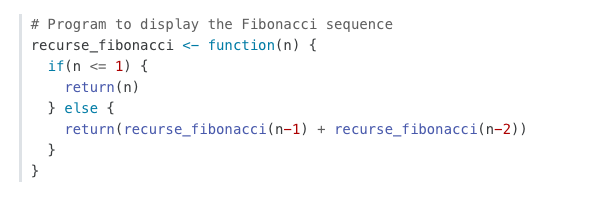
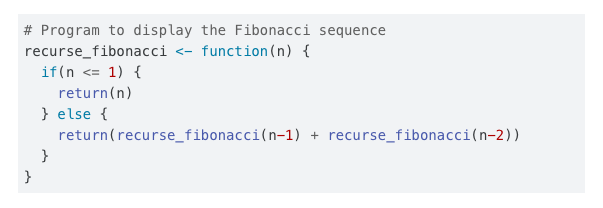
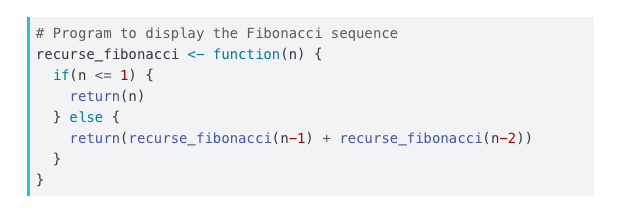
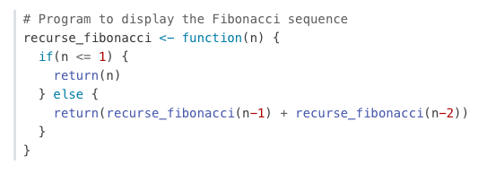
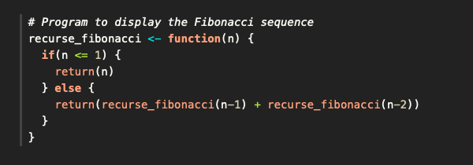
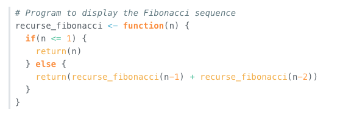
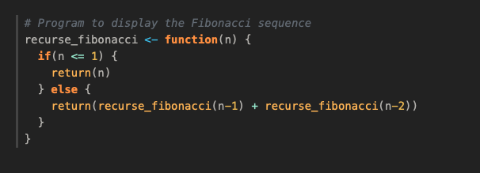

Bootstrap
TipLearn more
See the full guide on HTML Code Blocks and Callout Blocks.
Floating TOC
The HTML format by default uses a floating table of contents which can be customized using the following:
format:
html:
toc: true
toc-float: true
toc-title: ContentsThe floating table of contents can be used to navigate to sections of the document and also will automatically highlight the appropriate section as the user scrolls. The table of contents is responsive and will become hidden once the viewport becomes too narrow. See an example on the right of this page.
Tabsets
Example
Tabsets as such:
R
fizz_buzz <- function(num_array=seq_len(100L)) {
result_array <- Map(function(r,n){cat(paste0(ifelse(r=='',n,r),'\n'))},
r=paste0(ifelse(num_array%%3L,'','Fizz'),
ifelse(num_array%%5L,'','Buzz')),
n=num_array)
}Python
def fizz_buzz(num):
if num % 15 == 0:
print("FizzBuzz")
elif num % 5 == 0:
print("Buzz")
elif num % 3 == 0:
print("Fizz")
else:
print(num)Java
public class FizzBuzz
{
public static void fizzBuzz(int num)
{
if (num % 15 == 0) {
System.out.println("FizzBuzz");
} else if (num % 5 == 0) {
System.out.println("Buzz");
} else if (num % 3 == 0) {
System.out.println("Fizz");
} else {
System.out.println(num);
}
}
}Julia
function FizzBuzz(num)
if num % 15 == 0
println("FizzBuzz")
elseif num % 5 == 0
println("Buzz")
elseif num % 3 == 0
println("Fizz")
else
println(num)
end
endMarkdown
The example is implemented using markdown like:
::: {.tabset}
## R
``` {.r}
fizz_buzz <- function(num_array=seq_len(100L)) {
result_array <- Map(function(r,n){cat(paste0(ifelse(r=='',n,r),'\n'))},
r=paste0(ifelse(num_array%%3L,'','Fizz'),
ifelse(num_array%%5L,'','Buzz')),
n=num_array)
}
```
## Python
``` {.python}
def fizz_buzz(num):
if num % 15 == 0:
print("FizzBuzz")
elif num % 5 == 0:
print("Buzz")
elif num % 3 == 0:
print("Fizz")
else:
print(num)
```
:::Callouts
Callouts are an excellent way to draw extra attention to certain concepts, or to more clearly indicate that certain content is supplemental or applicable to only some scenarios. Here are some examples of callouts:
Warning
Callouts provide a simple way to attract attention, for example, to this warning.
ImportantThis is Important
Danger, callouts will really improve your writing.
Note
Note that there are five types of callouts, including: note, tip, warning, caution, and important.
TipTip With Caption
This is an example of a callout with a caption.
CautionExpand To Learn About Collapse
This is an example of a ‘collapsed’ caution callout that can be expanded by the user. You can use collapse="true" to collapse it by default or collapse="false" to make a collapsible callout that is expanded by default.
Create callouts in markdown using the following syntax (note that the first markdown heading used within the callout is used as the callout heading):
:::{.callout-note }
Note that there are five types of callouts, including:
`note`, `tip`, `warning`, `caution`, and `important`.
:::
:::{.callout-tip}
## Tip With Caption
This is an example of a callout with a caption.
:::
:::{.callout-caution collapse="true"}
## Expand To Learn About Collapse
This is an example of a 'folded' caution callout that can be expanded by the user. You can use `collapse="true"` to collapse it by default or `collapse="false"` to make a collapsible callout that is expanded by default.
:::Callouts are rendered in HTML as illustrated above. In PDF output the awesomebox LaTeX package is used for callouts. Callouts currently receive no special treatment in EPUB or MS Word output.
Code Blocks
By default code blocks are rendered with a left border whose color is derived from the currently theme. You can customize code chunk appearance with some simple options that control the background color and left border. Options can either be booleans to enable or disable the treatment or can be legal CSS color strings (or they could even be SASS variable names!).
Appearance
Here is the default appearance for code blocks (note the border at left and no background highlighting):

You can add a background using the code-background option:
code-background: true
You can combine a background and border treatment as well as customize the left border color:
code-background: true
code-border-left: "#31BAE9"
Highlighting
You can specify the code highlighting style using highlight-style and specifying one of the supported themes. Supported themes include all the themes included in Pandoc (pygments, tango, espresso, zenburn, kate, monochrome, breezedark, haddock) as well as an additional set of extended themes here:
https://github.com/quarto-dev/quarto-cli/tree/main/src/resources/pandoc/highlight-styles
For example:
highlight-style: githubHighlighting themes can provide either a single highlighting definition or two definitions, one optimized for a light colored background and another optimized for a dark color background. When available, Quarto will automatically select the appropriate style based upon the code chunk background color’s darkness. Users may always opt to specify the full name (e.g. atom-one-dark) to by pass this automatic behavior.
By default, code is highlighted using the arrow theme. We’ve additionally introduced the arrow-dark theme which is designed to provide beautiful, accessible highlighting against dark backgrounds.
Examples of the light and dark themes:
Arrow (light)

Arrow (dark)

Ayu (light)

Ayu (dark)

Responsive Figures
If an image does not include an explicitly set height, it will automatically become responsive. Try resizing the browser and note how the image below grows and shrinks.